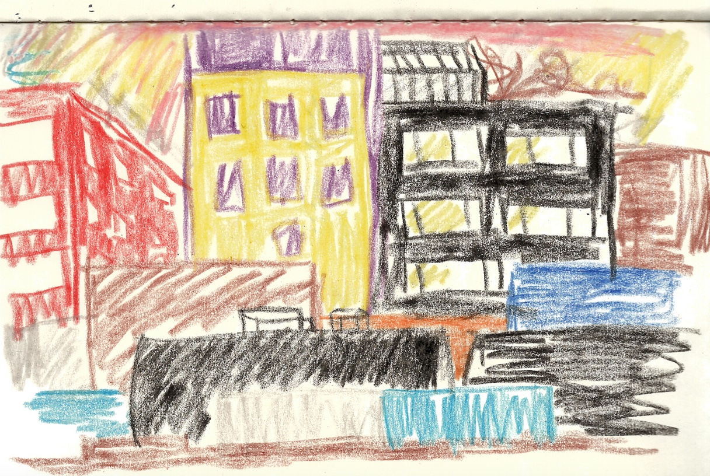
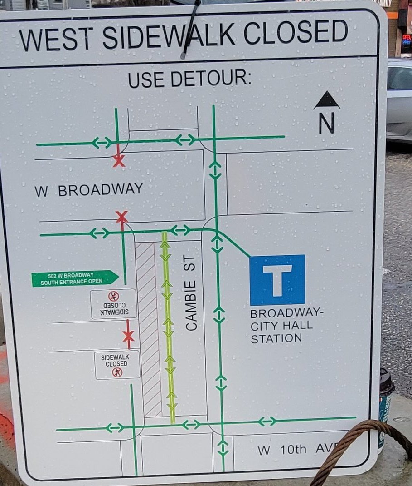
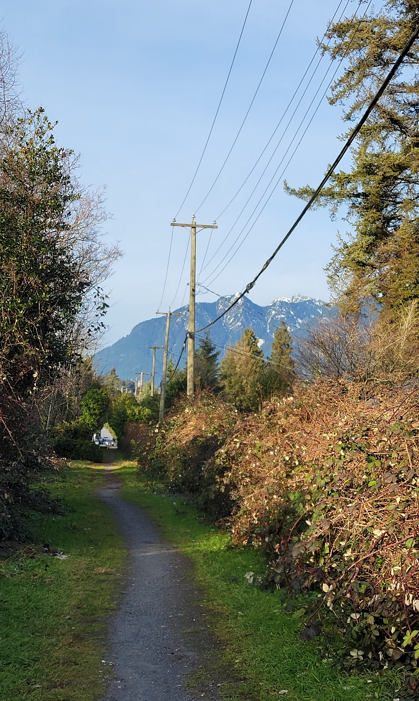
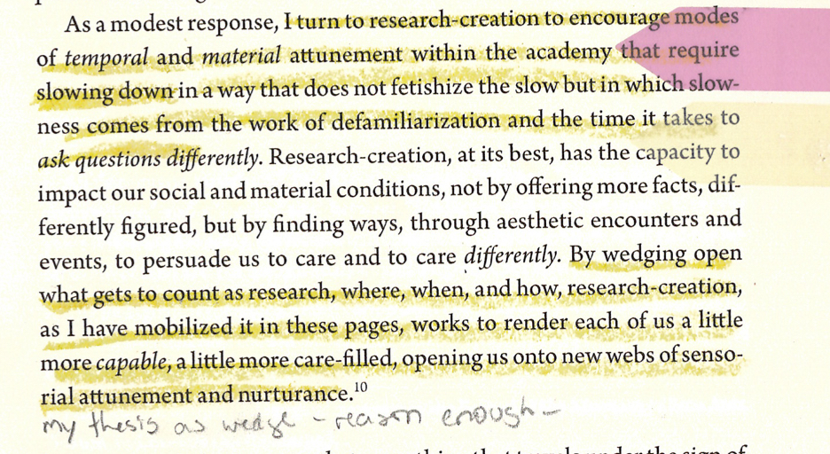

I have come to understand being a geographer as less of an ability to know where you are in space at all times and more of a capacity to learn through disorientation. Like many colleagues, I began graduate school in a place I’d never been before and where I didn’t really know anyone. In the midst of a global pandemic I left rural Maine in the northeast corner of the United States where I'd been isolating for a year and began driving west. For the first time in my life I didn't plot out a route beforehand. Had I planned that summer, I certainly would not have accounted for a farmer stint in Oregon or becoming a freelance cartographer making maps from a makeshift desk in the back of an old schoolbus. Three months after setting out, I crossed the land border into Canada on the opposite side of the continent and drove into the city so-called Vancouver.
For seven months I lived in Dunbar, a neighborhood of mostly wealthy single family homes, amongst which mine stood out. The backyard was a rambling garden bed with a sagging clothesline and blackberry briars that would catch at my face and arms every morning as I pushed through with my bike to the alleyway. Seven people and three hens lived there––a range of ages, personalities, and lifeworlds often in dissonance. I I didn’t research anything about the physical geography of Vancouver before deciding to move here. I don’t know why. Maybe the overwhelm of multiple converging crises made the indeterminacy of my future sort of comforting. The only imaginary I had of Vancouver was from a glance at Google Maps’ Street View. It will come as no surprise then that I was not prepared for the hills. Or the rain. Or even the mountains.
As teaching assistant for a departmental cartography course, I was responsible for introducing and evaluating assignments, as well as demonstrating the use of required software. The first assignment: to make a map of downtown Vancouver by tracing a screenshot from Google Maps in Adobe Illustrator. I marked sixty of these maps before I finally ventured to the place they represented.
My first excursion downtown was in December of 2021, six months after I'd arrived in Vancouver. I took the 7 from Dunbar all the way to the waterfront. This took about an hour - one reason downtown seemed so distant and therefore inaccessible from the rest of the city. I was stuck on a term paper and figured disorientation might help. It did. I rode the bus for about an hour, through the skyscrapers of downtown down to Waterfront Station where we turned right, following the harbor's edge. I stepped off a few stops later. Still walking in the same direction as I'd been traveling a moment before, I came upon a bridge - an infrastructure which has supported my intertwined intellectual and pedestrian practices since. The following became the Prologue to that term paper:
Where Main Street ends, at the boundary between Gastown and the Downtown Eastside, there is a bridge. Well it’s more of a ramp really that curls around so the road never ends but continues by a different name in a new direction. I found myself there the other morning, standing alone just gazing towards the North Shore Mountains. It was clear and cold and snow had settled over their jagged peaks in a perfect gradient. Before the mountains and directly below me spread a panoply of infrastructure––Vancouver’s Centennial Terminals. Tower cranes, gantry cranes, straddle carriers, forklifts, trucks, trains, train tracks, shipping containers, and pipes of iron and steel. Every dimension was in motion. Machinery moved slowly and methodically while humans moved in erratic zig-zags around the pavement. Some were operating the machinery while some machinery were operating themselves. As a train drew in below me I peered down to see the conductor watching the switchboard, prepared to take action in the event of system failure. But what happens when the train is your argument and it fails to budge along the tracks you’ve set out for it to follow? In my case, I laid down too many tracks. I got so swept up in constructing the possible paths this essay could take that when I geared up to leave the station––to write it all out––I was paralyzed by the tangle before me. Although a lifelong creative, my undergraduate background is predominantly in the sciences and so thinking and writing academically within the context of humanities scholarship is new. The infrastructure of a bridge holds sound because it is built not from one side over to the other but from both sides at once. I want to act as a bridge between the arts and sciences and so I have stepped one foot from mountains, from geomorphology and erosion rates, and begun seeking foothold on a new shore (and country) with cities and people and infrastructures to start building from another perspective. Since arrival, I have been all around disoriented and not at all adept. My ideas are sprawling and interconnected like Centerm shipyard. There is so much this city this class and these books have led me to unpack and explore. For now, however, I am taking one final title, turning in one final direction, and following a single train of thought to an end with the idea of infrastructure in mind.
I returned to that place on new years eve and watched the sun set in silent company with 2 strangers who'd had the same idea. I walked along the back street and sketched the city from behind.

Having now inhabited Vancouver for over two years and taught this assignment nine times, I find Google’s map incongruous with my mental map of the city drawn from practical experience. Such locative, destination-oriented maps, writes Laura Kurgan, “impos[e] a quiet tyranny of orientation that erases the possibility of disoriented discovery. . . ” (2013, 17).
Kurgan, Laura. Close up at a Distance: Mapping, Technology, and Politics. First hardcover edition. Brooklyn, NY: Zone Books, 2013.
NAVIGATION
Spatial awareness of my surroundings has evolved (and continues to evolve) not by following Google Maps from A to B or memorizing the trace of its aerial contours, but rather as the effect of becoming lost and wandering around. Thus disoriented, I find areas of familiarity connected in surprising ways. . .
I take the 33 bus to campus on a whim. I'm running late to teach and I don't want to deal with the hassle of Broadway construction. Why have I never taken the 33? I wonder as a 5 minute walk brings me to a deserted stop. I sit on a bench in the sun to catch my breath. The 33 is one of the smaller buses. Its seats have that soft fabric patterned like a roller rink carpet. Riding the 33 is outside my routine. Its route takes me through places I've been before but have never connected by this route. I write these thoughts in the white space of a book I brought with me - A History of My Brief Body by Billy-Ray Belcourt.
Some time later I boarded the 99 B-Line with Critical Concepts for the Creative Humanities. I had been in a rush to leave and grabbed it spontaneously from the pile of books on my kitchen table because it fit in my coat pocket and also because each concept is a 4 page read––the time it takes to ride the 99 Bus 2 stops west along Broadway. It opened in my lap to where I'd hastily tucked an IKEA crayon. A concept I'd been thinking about all day but had yet to visit in this book: Navigation. Write Tuin and Verhoeff (2022, 137): “...navigation entails the production of a performative cartography of a terrain, field, or domain that is constituted in the very act of its exploration." Exploration, put one way, is "the action of traveling in or through an unfamiliar area in order to learn about it." Though the field (city, body of academic literature) may be at first unknown and therefore unfamiliar, iterative navigation coheres a web of spatial relations that serves as reference. This is how I conceive of a mental map. Unlike Google’s 2-dimensional map that directs navigation from A to B, mental maps are composed (and decomposed) through nonlinear, even destination-disoriented navigations that form "those invisible lines of people, places, and networks that create the most common spaces we live in today" (Kurgan 2013, 17).
I realize the city is not a site with fixed boundaries and determinate properties which preexist encounter and which I, as inhabitant-geographer-cartographer, may irresponsibly separate myself from in order to map from an exterior position. Rather, the city is performatively constituted as a physical-conceptual field whose emergent topology is iteratively drawn through everyday navigations. As such, the city and I are entangled, figured and continuously reconfiguring in dynamic relation.
TACTICS OF PRACTICE
Michel de Certeau describes everyday practices such as talking, reading, and moving about as tactical, “ways of operating” the Greeks called mētis (1984, xix). James Scott (1998) elaborates mētis as practical knowledge. In contrast with epistemologies that are abstract, general, and universal, practical knowledge is experiential, situated, and local (Scott 1998, Chapter 9). Tactics are methods whose validity is measured by their applicability to the situation at hand (Roberts 2018b). Tactics deploy practical knowledge. The tactics of everyday practices are opportunistic; appropriating the hegemonic system from within, such “surreptitious creativities” form a “proliferating illegitimacy” which resists the authority that seeks their administration or suppression (de Certeau 1984, 96). Whereas the system in authority deploys strategy to delimit and maintain the place of its positioning, “a tactic is a calculated action determined by the absence of a proper locus… The space of a tactic is the space of the other” (de Certeau 1984, 37).
Learning through disorientation requires tactics. The objectives of my research and the object of my thesis have emerged through everyday practices of talking, reading, and otherwise navigating a physical-conceptual field that was at first unfamiliar. I did not embark upon my thesis with a destination-oriented strategy so much as the desire to find out what being a geographer could mean for me. Instead of preemptively delimiting a field whereupon to lay my claim, in true relationship anarchy style, I designed my own commitments so as to “build for the lovely unexpected” (Nordgren 2006). My work is research-creation for it sets up a dialogue with the world and is driven by spatial and intellectual topoi which lure me forwards even before I comprehend where they lead (Loveless 2019). My fieldsite cannot be instantaneously apprehended as the nominal City, nor can it be captured by the frame of a single map. Neither has one disciplinary framework or methodology been sufficient: each time I leave home I bring along an assortment of people/stories/theories I wish to think with for the day. I put them into conversation first amongst themselves. Heavy in my bag, their pages interlap, folding together like a pair of hands. Opening one, I open myself: Read me
TRACING THE CITY
De Certeau relationally articulates space and place with the following: “space is a practiced place” (117, emphasis in original). He writes:
Google’s map of Vancouver abides by the law of the “proper”. It produces the city as a place wherein each element has a distinct location. Position is made determinate by a spatial configuration which “excludes the possibility of two things being in the same location (place)” (de Certeau 1984, 117, emphasis in original). Such a static coordination allows for navigation to be routed (by Google) from one element to another. The navigational possibilities, however, remain determined by the law whose logic governs the map: follow streets, not alleys; walk on sidewalks; don’t jay-walk; turn right here, not at the next block. Disorientation is a destination not found by Google Maps, which asks in response, "Should this place be on Google Maps?" (“Google Maps” n.d.).
Yet de Certeau contends it is pedestrian movements that spatialize the city, writing, “space is composed of intersections of mobile elements… space occurs as the effect produced by the operations that orient it, situate it, temporalize it…” (1984, 117). While urban geographers and planners may theorize and design the city, urban space is produced through everyday navigations and encounters. If the apprehension of place renders position determinate, the motion that spatializes renders position indeterminate: “to walk is to lack a place” (de Certeau 1984, 103). Google Maps imposes the law of the “proper” upon navigation by substituting “a mark in place of acts, a relic in place of performances: it is only their remainder, the sign of their erasure” (35, emphasis in original). While the first cartography assignment I taught generated practical knowledge of Adobe Illustrator, it did not prepare me or my students to navigate the city from ground level. Tracing a map stood in place of spatial practice. The mapper was positioned as a disembodied viewpoint, a voyeur “lifted out of the city’s grasp” (de Certeau 1984, 92).
The rhythmanalyst, on the other hand, immerses himself in the world with all his senses: “he must arrive at the concrete through experience” (Lefebvre 1992, 32). Figured by Henri Lefebvre (1992), the rhythmanalyst is he who “garbs himself in this tissue of the lived, of the everyday” and, taking his own internal rhythms as reference, comes to listen to the city as if it were a symphony (31-32). Situated simultaneously inside and outside the subject of analysis, the rhythmanalyst understands that “...to grasp a rhythm it is necessary to have been grasped by it; one must let oneself go, give oneself over, abandon oneself to its duration” (Lefebvre 1992, 37, emphases in original). Pressing my chest against the Granville Bridge I feel at once its trembling vibration and my own heart’s rapid beating. I embody a sonic superposition: vibrational waves overlap; interfere; combine. The rhythm of their resulting wave marks a pattern of interference, also called a diffraction pattern. Through visceral encounter, I become entangled with the infrastructure which I had heretofore approached as an instrument unto an abstracting vantage.
What could it mean to think with place? To feel the city? How might the tactics of practical knowledge be employed to interfere with epistemological hegemonies from within? My master’s research is an exploration and response to these questions through deep mapping, a practice of situated, embodied inhabitation by which I enter into dialogue with my surroundings. My thesis project amounts to cultivating my practice of deep mapping, theorizing my interpretation of this capacious practice through practice, and enacting my theory as praxis. What is rendered here is not a substitution for practice but the effects of continued practice, a partial account of an ongoing and open-ended dialogue with the world.
Re-presenting the city through points, lines, and polygons elides the multiplicity of practices that compose urban space. To trace Google’s map of Vancouver, whether by foot or by cursor, is a performative citation of the city as a proper place, making “the city” determinate as an instantaneous configuration while rendering illegible the everyday practices that produce urban space.
de Certeau, Michel. The Practice of Everyday Life. Translated by Steven Rendall. Berkeley: University of California Press, 1984.
Maps meant for directed navigation from A to B render invisible the act of navigation which created them and which they may propel. Spatial awareness––be it of a software interface, web-map, or city––develops through use, through everyday practices of navigation. Spatial awareness is therefore practical knowledge. Practical knowledge is legible within mental maps in a way it is not within Google Maps. Google Maps doesn't account for the weekly re-configuring of pedestrian traffic around a major intersection due to a multi-year subway construction project. When the law of the proper attempts to map detours, tracing it inevitably leads to disorientation. Sometimes the best way to gain spatial awareness is to look/listen/feel/sense up at and around one’s surroundings.

Shifting navigations around the broadway-city-hall intersection due to the multi-year subway construction project.
Disorientation destabilizes the law of the proper. There are (at least) two kinds of navigation with a "futuristic thrust": destination-oriented navigation and lure-oriented navigation, and both are opportunities to practice disoriented discovery.
Destination-oriented navigation must not needs be direct(ed) movement from one location to another.
Choose a destination you can navigate to without the use of Google Maps. Begin from a familiar location. Try navigating there by taking a detour or making up an alternative route. How far out of your way can you go? Practice the exercise again but beginning from an unfamiliar location. What changes?
Choose a destination you have been to before but which you must pass through an unfamiliar to reach. Perhaps you’ve navigated there in the past, but used Google Maps to guide your use of public transport. Or it was late and dark and you couldn’t quite make out the landmarks blurred by the rain. Beginning from a familiar location––your home for example––navigate towards your destination without the use of Google Maps. Reflect on what senses/memories/stimuli you used to guide you. Did you encounter anything surprising or before unknown in the process?
Or go on a drift alone or with a friend - turning towards unfamiliarity as far as you can go. Get on a bus and get off on impulse.
Alternatively, the destination may not be a particular geographic location but rather a lure. Navigation then might be expressed by pursuing a gut feeling, the drift of a graffiti tag, intuition, or allowing oneself be tugged and pulled by affective contours such as a sidewalk dappled with sunlight, an inviting cluster of houses, the smell of california lilacs, or further still, moving towards a sensed (but not seen) opening.

One day I biked to lighthouse park, 30 kilometers each way. I decided not to use a navigational map and just find my way there. I biked through downtown and took the water taxi across burrard inlet to lonsdale quay from where I leisurely made my way over many hills to Lighthouse Park in western vancouver. On my way there I was lazily biking through neighborhoods, getting a sense of the area. At one moment it seemed as though I was caught in a loop and would have to backtrack to get out and on. But I had a feeling there would be a pathway and that was enough to draw me forwards. Sure enough, between two houses was the slimmest trail which opened onto a pathway that ran behind 3 rows of houses.
Moretti, Christina. “Walking.” In A Different Kind of Ethnography: Imaginative Practices and Creative Methodologies, edited by Denielle Elliott and Dara Culhane, 45–67. North York, Ontario, Canada ; Tonawanda, New York, USA: University of Toronto Press, 2017.
Disoriented discovery is both a method and object of my research. Detours, like taking the 33 bus or a new route to a familiar location, open up the possibility of surprising connections and serendipitous encounters. As chance would have it, I came upon a paper by Esther Fitzpatrick (2017) in which she traces ‘serendipity’ back to its origin story to demonstrate the important role serendipity plays in her creative research practice.
Fitzpatrick, Esther. “The Bricoleur Researcher, Serendipity and Arts-Based Research.” Ethnographic Edge 1, no. 1 (December 7, 2017): 61–73.
The Serendipiter, Fitzpatrick learns, “is a skilled researcher who always has a problem or question that occupies their mind, who immerses themselves 'playfully' and 'passionately' into their world, and who is open to notice and discover connections and patterns throughout their daily Encounters” (Fitzpatrick 2017, 64). The Serendipter is not dissimilar to the Rhythmanalyst, figured by Lefebvre (1992) as he who “garbs himself in this tissue of the lived, of the everyday” and, taking his own internal rhythms as reference, comes to listen to the city as if it were a symphony. The Rhythmananlyst immerses himself in the world with all his senses: “He must arrive at the concrete through experience. Situated simultaneously inside and outside the subject of analysis, the rhythmanalyst understands that “...to grasp a rhythm it is necessary to have been grasped by it; one must let oneself go, give oneself over, abandon oneself to its duration” (Lefebvre 1992, 37, emphases in original). Pressing my chest against the Granville Bridge I feel at once its trembling vibration and my own heart’s rapid beating. To put it a bit romantically, I embody a sonic superposition: vibrational waves overlap; interfere; combine. The rhythm of their resulting wave marks a pattern of interference, also called a diffraction pattern. Through visceral encounter, I become entangled with the infrastructure which I had heretofore approached as an abstracting vantage.
[include as sitation later]
Lefebvre: ..to grasp a rhythm it is necessary to have been grasped by it; one must let oneself go, give oneself over, abandon oneself to its duration.
What could it mean to think with place? To feel the city?
I explore and respond through deep mapping, an open-ended practice of situated embodied inhabitation that assumes the field of encounter as interlocutor. My work is research-creation for my inquiry employs a creative practice and my output is both text and artistic product. Indeed, I go even further to integrate the two into a multimodal product. But research-creation is more than what’s described by SSHRC’s definition; indeed, I believe it to be a rhythm that exceeds measure. What is meant by this is elaborated throughout this space. For here and now, I introduce the source of my research-creation inspiration, a manifesto recommended to me by a former classmate (whose research-creation I have had the time-and-again honor of witnessing manifest). For Natalie Loveless (2019), research-creation is a matter of attending to “how we do, think about, and think-with our research practices” (70, emphasis in original). It is about being accountable for the stories we tell and are told by––“those that grasp us as much if not more than we grasp them” (96, emphasis in original). My work to be research-creation in this deeper sense because it asks questions that set up a dialogue with the world and is driven by intellectual and spatial topoi which lure me forwards even before I comprehend where they lead (Loveless 2019).

Loveless, Natalie. How to Make Art at the End of the World: A Manifesto for Research-Creation. Duke University Press, 2019.
Deep mapping is slow scholarship: it takes time to get lost, take detours, go the longer way. Research-creation is about learning through disorientation… it “follows desire, and builds spaces and contexts that allow the time and space to experiment in unpredictable directions” (70, emphasis in original).
[introduce bricoleur/bricolage maybe- though again, will be discussed in length later]
For Fitzpatrick, being a bricoleur researcher means “allowing space for getting lost, learning to use my intuition by feeling my way through, taking my time, waiting and mulling over, playing with my material, and tossing back and forth between theory, words and knowledge.”
"the bricoleur... is arguably less governed by an overarching awareness that they are embarked on a ‘project’, and that, correspondingly, they are performing in compliance with a clearly defined set of ‘aims’ or ‘objectives’. The idea that research might be conducted under conditions of aimlessness and without a clear objective in mind does not necessarily mean that it lacks the rigours of ‘accomplishment and execution’ but that much of what is fashioned in the process is contingent on factors that cannot always be foreseen." (Roberts 2018, ?, emphasis mine)
In output oriented research, an aim signals a clear destination. However, aims can be refigured as lures. Embracing serendipity, my relationship to Vancouver and to my research-creation thesis has been guided from the start by The short instructional manifesto for relationship anarchy (Nordgren 2006).
Two tenets that especially pertain are “Build for the lovely unexpected” and “Design your own commitments.” After I decided on my thesis topic in May of 2022, I organized all the relevant literature I had in-hand around my kitchen table along with every major concept, idea, person, or scrap of information I could think of scrawled on yellow sticky notes. Returning to the site of my initial enthusiastic chaos, my Values and Aims stand out.
A year and a half later, I assemble this page with a clearer idea of what my project is about. My best ideas, however, remain written on sticky notes.
My thesis project amounts to cultivating my practice of deep mapping, theorizing my interpretation of this capacious practice through practice, and enacting my theory as praxis. Deep mapping does not ‘counter cartography;’ yet neither does it render down to a flat map in the Cartesian sense. As I theorize it, deep mapping is not defined in opposition so much as marked by iterative acts of interference with hegemonic forms of representing place, producing geographic knowledge, and rendering spatial research public. What is rendered here as my thesis output is not a substitution for practice but the effects of continued practice, a partial account of an ongoing and open-ended conversation. It’s all the field for deep mapping, especially the form of a thesis. [insert description of that] The html pages of my web-feild-site are eightfold. [about how to navigate them]. Negative-space.github.io/practice.html introduces my practice of deep mapping, thinking through practice in the formulation of my theory. Negative-space.github.io/interference.html further elaborates on my theory by situating it within a theoretical framework. Negative-space.github.io/framing.html accounts for the boundary drawing necessary in order to say something about the world, to rendering part of it differentially intelligible, if only for this project. Negative-space.github.io/tactics.html explains that deep mapping is about collecting, through everyday activities, skills/tools/materials that are lying around and then making use of whatever is most appropriate in a given situation. Negative-space.github.io/rendering.html articulates how my thesis at once performs an interference, and is itself, the articulation of interference as praxis. Negative-space.github.io/superposition.html reveals interference, or diffraction patterns, to be the effect of praxis, i.e., the superposition of theory and practice. Negative-space.github.io/rhythmanalysis.html––well, you can discover for your self.
Like Fitzpatrick (2017) says, “the bricoleur sets out on a journey of discovery” (?). My thesis is process rather than destination oriented. It emerges from navigating the field of possibilities opened up when A and B are recognized to be but place holders like latitude and longitude. After all, iteration of a form reveals beginning and end to be merely places of turning and return.
Certeau, Michel de. The Practice of Everyday Life. Translated by Steven Rendall. Berkeley: University of California Press, 1984.
Fitzpatrick, Esther. “The Bricoleur Researcher, Serendipity and Arts-Based Research.” Ethnographic Edge 1, no. 1 (December 7, 2017): 61–73.
Google Search. “Exploration.” Accessed August 10, 2023.
Kurgan, Laura. Close up at a Distance: Mapping, Technology, and Politics. First hardcover edition. Brooklyn, NY: Zone Books, 2013.
Loveless, Natalie. How to Make Art at the End of the World: A Manifesto for Research-Creation. Duke University Press, 2019.
Moretti, Christina. “Walking.” In A Different Kind of Ethnography: Imaginative Practices and Creative Methodologies, edited by Denielle Elliott and Dara Culhane, 45–67. North York, Ontario, Canada ; Tonawanda, New York, USA: University of Toronto Press, 2017.